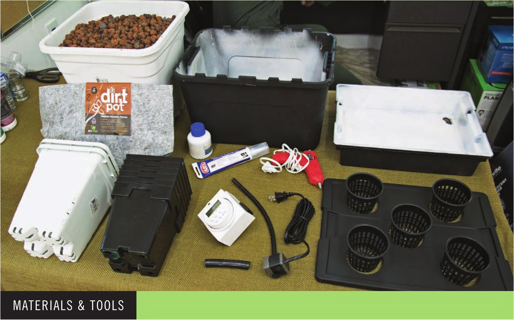

HOW TO BUILD A FLOOD AND DRAIN SYSTEM Reservoir and Grow Bed 1 14" Lx 11" Wx3V4m H plastic tote 1 14.7" Lx 10.6" Wx 9.1" H plastic tote (4 gal.) Scotch tape Spray paint Irrigation 1 1 " 5/i6n black vinyl tubing 4" Vi black vinyl tubing 1 Submersible water pump, 40 GPH 1 Outlet timer Substrate and Pots* 2 6" square pot or 4 5" square pot or 1 2-gal. fabric pot or 5 3" net pot or Grodan A-OK 36/40 cubes (for microgreens) * This garden can be modified to fit a wide variety of pots. See the planting options before deciding on pot selection. Tools Drill Step drill bit with Vs" increments from W to 13/s" Hot glue gun Heavy-duty scissors 2W hole saw drill bit Safety Equipment Work gloves Eye protection 102 DIY HYDROPONIC GARDENS
